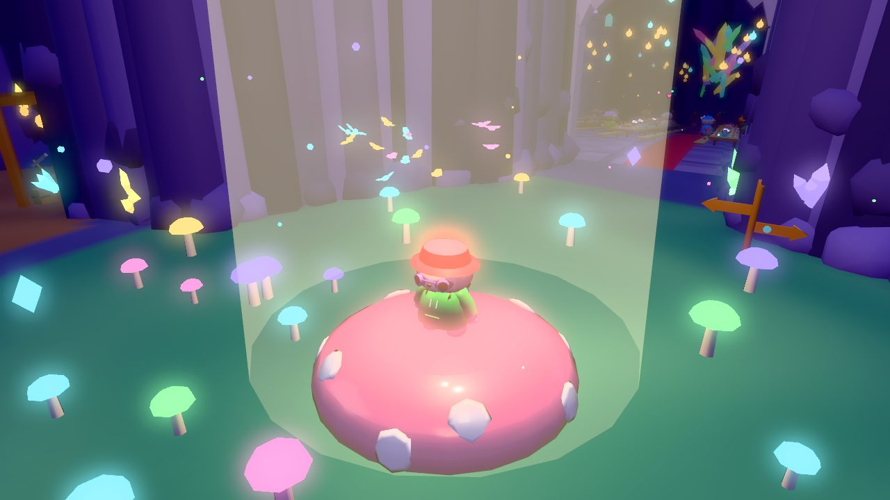
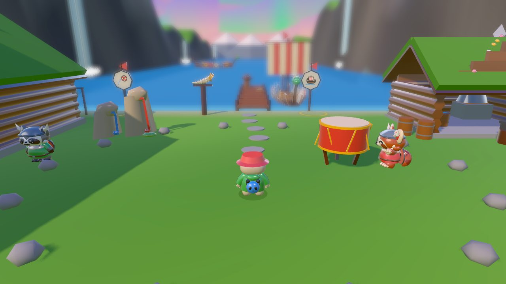
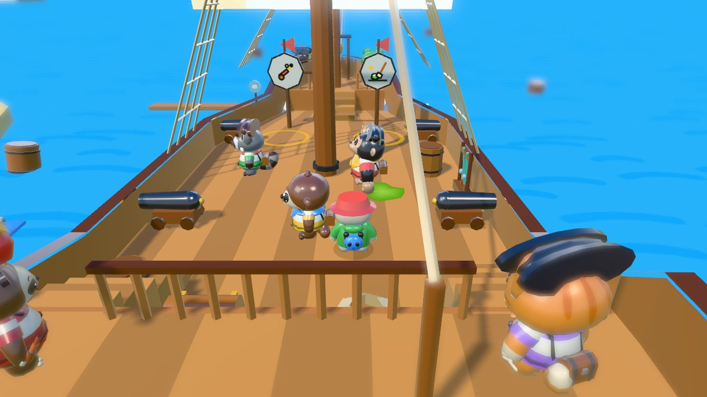
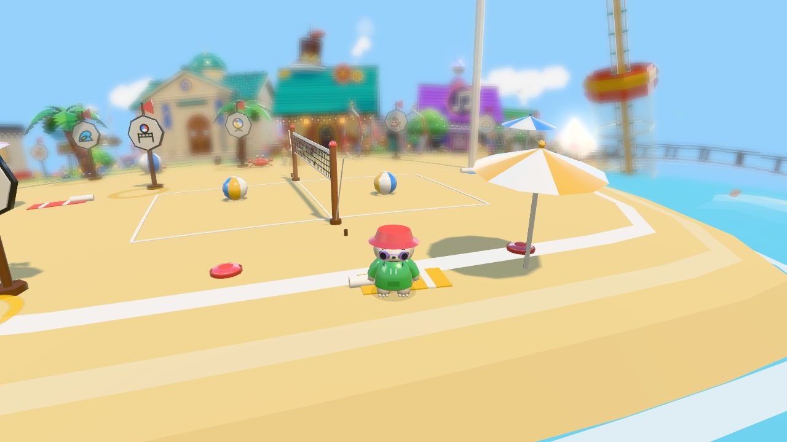
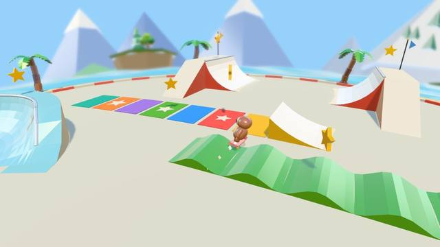
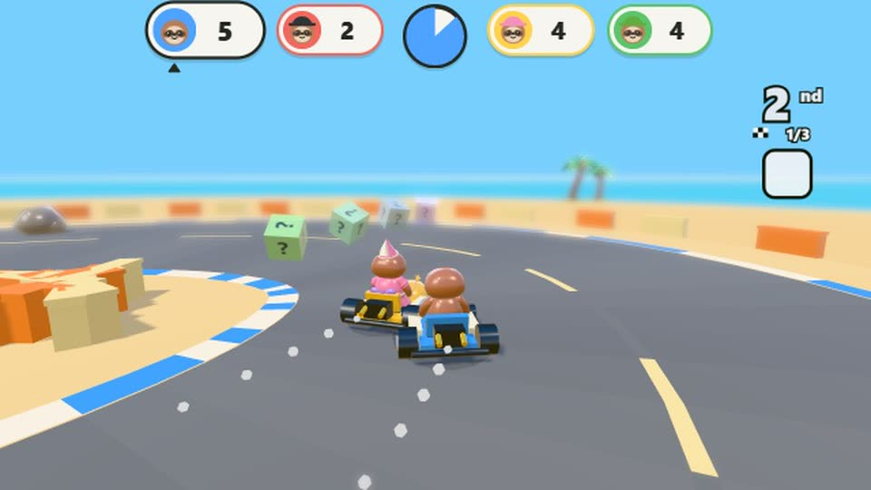

News
New on the island: glowing caves, Vikings, a pirate ship and more
· Strategic Sloth

The Sloth Jam island grew a lot in the first half of October. Here is what is new, where to find it and what to do there. All of it is free and works without online play.
The Glowdeep, the caves under the island
Find the burrow on the north lawn and press the action button to drop down the hole. Below are glowing caves to explore: sit down to a feast with the cave folk in the Great Hall, play a tune on singing crystals, ride the river down to the bouncy Mushroom Wood, and look for 14 glow gems. Moths, crystal snails, a mole, an axolotl and fluffy bats live down there too.
Fjordhold, the Viking village

Blow the horn on the north-west beach and a longship rows you up the fjord to Fjordhold. The chief, a friendly yeti, gives you orders in pictures, and each one you finish raises your name in the village, from sprout all the way up to jarl. Play Longship Row, Shield Toss and Sheep Herd. Every few minutes, friendly Vikings row their longships up to the beach for a playful raid and leave a gift chest behind.
The pirate ship

A big galleon sails around the island. Climb into the cannon on the east beach and it fires you aboard. On deck you can steer at the wheel, fire cannons at barrels, climb to the crow's nest, ring the bell and mop up goo. Follow the captain's orders to rise from deckhand to captain, and play Cannon Volley and Swab the Deck. When you are ready to go home, walk the plank.
The Bubble Line train
A coaster train now runs all the way around the island: up on tall stilts, through a loop and a corkscrew, and under the sea in a glass tube. Hop on at one of its three stations, at the fair on the south-west beach, at the harbor or at the lookout.
Sunny Point

A big sandy cape now reaches out from the south-east beach, with a volleyball court and frisbees. Two new party games go with it: Beach Volley and Frisbee Fetch.
Skate Isle tricks

On Skate Isle, over the bridge off the north-west shore, every rail, ledge and edge can now be ground. Pick a skateboard, scooter, bike or roller skates from the rack, use the Grind, Flip and Spin buttons to string tricks together, collect 12 stars and go for a bronze, silver or gold medal.
Sloth Kart and Lachlan's Garage

Five kart tracks wait by the go-kart pad on the south street: Plaza Loop, Coconut Coast, Frosty Peak, Lava Run and Rainbow Sky. Lachlan, the go-kart mechanic, stands by the pad. After the first chapter of the story he has Pit Crew quests for you, and his garage behind the flags has all five tracks plus two arcade cabinets.
Pets to adopt
Kittens and puppies now wander around town to pet, and some tag along for a while. At the pet shop on family lane you can adopt your own kitten or puppy for free and give it a picture name tag. It follows you for good. Pets sometimes leave a little mess, and scooping it up pays a couple of coins.
Play as the island's animals
Ten of the island's animals now have a tale of their own in four chapters: the Cat, Otter, Frog, Raccoon, Red Panda, Gorilla, Toucan, Bat, Capybara and Yeti. Finish an animal's tale and you can play as that animal. The tales open as the story goes on, and the Yeti's comes last.
Song of the Wind
The Great Jam story has grown into a nine-chapter adventure across the whole island. It starts by itself after the first-day tour. Along the way you earn tools to use anywhere: a toy sword, a lantern, the Wind Baton, a spyglass and a vine hook.
Easier to find your way
The Games button in the menu now opens a picture box of every game, toy and trip. And the quest card's arrow points to what to do next: tap it to lay a trail and walk there.